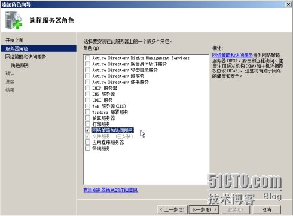

在Windows环境中架设Open×××服务相对比较简单，网上这方面的教程也比较丰富，照葫芦画瓢即可。但是大部分教程都只讲了如何将client与Server通过×××管道连接起来，使client可以正常访问Server所在的内部网络（这也是×××的主要应用）。而现实情况中往往有一种需求，就是client需要通过server来访问Internet，即server作为Proxy，对client访问Internet的数据进行转发。互联网上大部分收费的×××代理都是以这样的方式实现。
那么在Open×××中，要怎么实现呢？
一、首先，完成Open××× server端与client端的安装与配置。
server配置如下：
# 监听地址
local 0.0.0.0
# 监听端口
port 1194
# 使用TCP或UDP协议
proto tcp
;proto udp
# 使用TAP或TUN模式
dev tap
;dev tun
# 加密认证
ca ca.crt
cert server.crt
key server.key
dh dh1024.pem
# ×××子网
server 10.8.0.0 255.255.255.0
# 路由设置
push "route 0.0.0.0 0.0.0.0"
# 设置网关转发
push "redirect-gateway def1 bypass-dhcp"
# 设置dhcp DNS
push "dhcp-option DNS 114.114.114.114"
push "dhcp-option DNS 8.8.8.8"
ifconfig-pool-persist ipp.txt
duplicate-cn
keepalive 10 120
comp-lzo
persist-key
persist-tun
status open***-status.log
verb 3
client配置如下：
client
# 使用TAP或TUN模式
dev tap
;dev tun
# 使用TCP或UDP协议
proto tcp
;proto udp
# server地址端口
remote x.x.x.x 1194
# 加密认证
ca ca.crt
cert client.crt
key client.key
ns-cert-type server
persist-key
persist-tun
comp-lzo
verb 3
要使client通过server连接Internet，则在设置中要注意：
1、使用TAP模式；
2、加入路由设置
push "route 0.0.0.0 0.0.0.0"
3、设置网关转发并设置DNS
push "redirect-gateway def1 bypass-dhcp"
push "dhcp-option DNS 114.114.114.114"
push "dhcp-option DNS 8.8.8.8"
设置完成，client正常连接server后，使用ipconfig应该能正常看到×××网关地址，并且能够ping通×××网关。
二、在Server端，开启NAT。
以Windows2003系统为例（Windows 2008类似）：
1、添加服务器角色：路由和远程访问

2、配置NAT
3、选择server上连接Internet的接口
完成后，client应能够通过server连接Internet。
三、其他
1、Open×××默认使用Udp协议，网络上也说UDP速率会比TCP高。在测试中，TCP和UDP两种协议下，访问网络速度都可以达到峰值（10Mbps），可能是在这个带宽环境下，体现不出明显差别。
2、在实际使用中，要将client端的系统“DHCP Client”服务开起来！
3、在Vista、Win7或者Win8系统中，注意client的Open××× GUI要使用管理员权限运行，这样才能自动修改路由表等设置。
以上测试，在Open××× 2.3.4版本下测试通过。


Ctrl+Enter 发布
发布
取消